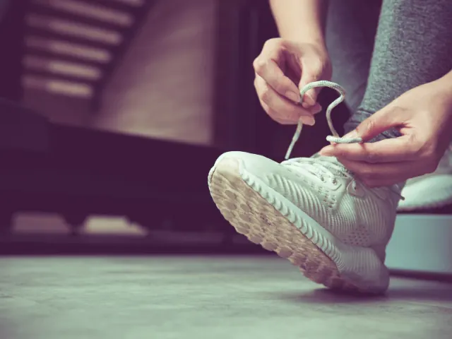

Partnerbijdrage
Bammmm!!!! En je bent FIT
Gepubliceerd op 8 maart 2023, bijgewerkt op 26 februari 2024

De werkelijkheid is toch echt anders dan de titel doet vermoeden. Met alle goede voornemens nog vers in het geheugen, maar met alle nieuwjaarsborrels/feestjes/ontbijten, zijn deze voornemens alweer als sneeuw voor de zon verdwenen. Of het nou gaat om stoppen met roken, of beginnen met gezond eten of meer bewegen, alles start met je mindset. Het is goed dat de knop omgaat naar een fitter leven, maar hoe ziet dat er dan precies uit?
In deze blog richten we ons op meer bewegen en sporten, speciaal voor de (weer) beginnende sporter, en op datgene waar jij baat bij zou kunnen hebben om (weer) fit te worden. We kijken naar wat jou zou kunnen helpen, en wat passend voor jou kan zijn.
Waarom is voeding in combinatie met sporten zo belangrijk?
Voeding en sporten zijn vooral in de combinatie samen belangrijk voor een optimale en goede gezondheid. Voeding voorziet je lichaam van energie en goede voeding helpt jouw lichaam die energie te gebruiken die je ook hard nodig hebt voor het sporten. Wanneer je in de supermarkt loopt kun je kijken naar voedingsmiddelen die hieraan vooral bijdragen, zoals vis, vlees, volkoren producten, peulvruchten, noten, zuivel, fruit en groenten. Deze dragen bij aan het verbeteren van je energie, kracht, uithoudingsvermogen en spiermassa. Met een goede balans tussen je voeding en het opbouwen van je training, kun je je gezondheid en algehele fitheid verbeteren. Wanneer je hier een goede balans in kan vinden, zal je je ook sneller fitter voelen. Een goede (life/personal) coach kan je hierin adviseren en bijstaan.
Pffffffff…..is sporten nou echt zo gezond?
Jazeker! Sporten is gezond omdat het voor jouw gezondheid op zoveel vlakken voordelen kan opleveren. Sporten verbetert het cardiovasculaire systeem, wat hart- en vaatziekten voorkomt, versterkt het immuunsysteem, verbetert de mentale gezondheid, helpt bij het verminderen van stress, voorkomt obesitas, helpt bij het verbeteren van de slaap en helpt bij het verminderen van het risico op bepaalde vormen van kanker. Dus jazeker, sporten helpt.
Ik wil echt fit worden, maar hoe dan?
Alles begint bij jezelf. Maak tijd vrij om te sporten en belangrijk daarbij is om prioriteiten en haalbare doelen te stellen. Wanneer jij de zogeheten knop in je hoofd weet om te zetten en er echt voor gaat, dan zijn er genoeg mogelijkheden om je fit te gaan voelen. Plan je trainingen van tevoren en maak hier samen met jouw (personal) trainer een schema voor. Van te voren nadenken over een ‘stok achter de deur’ voor de onvermijdelijk moeilijke momenten is slim. Bijvoorbeeld door met een trainingspartner te gaan, die je kan helpen om je motivatie waar nodig te verhogen.
Om fit te worden, is het belangrijk om een regelmatig trainingsprogramma op te stellen. Begin met een combinatie van cardio- en krachttraining om je metabolisme en spierkracht te verbeteren. Wissel je work-outs af met een les stretching, dit om je spieren te versoepelen en blessures te voorkomen. Verhoog de zwaarte van je trainingen geleidelijk en probeer je trainingen af te wisselen qua type work-outs, want je lichaam raakt gewend aan de trainingen met als effect dat het dan snel saai kan worden. Een gezonde voedingsstijl en evt. een specifiek sportersdieet zullen de resultaten van je training versterken. Je kan hierbij hulp inschakelen, denk hierbij aan een sportschool instructeur, fysiotherapeut, of een personal trainer.

Een sportschool werkt niet voor mij…. en nu?
Er zijn mensen die prima gedijen in een sportschool, hun eigen schema’s afwerken en genoeg motivatie hebben om hun doelen te bereiken. Dit zijn vaak niet de mensen die extra gemotiveerd hoeven te worden.
Eerlijkheid gebied te zeggen dat tegelijkertijd voor veel mensen de sportschool ook niet werkt. Ze beginnen vaak vol goede moed, maar je ziet veel beginnende sporters dan toch afhaken. Het is dan belangrijk om te kijken wat de oorzaak hiervan kan zijn. De sportschool is dan misschien niet de juiste plek voor jouw trainingen. Of misschien ben je je doelen al snel uit het oog verloren of heb je je schema’s niet goed gepland. Maar het kan ook zijn dat je je verveelt, of je geen motivatie kunt vinden om te blijven gaan.
Als je weet waarom het voor jou niet werkt, kun je verder kijken wat ervoor nodig is om je motivatie wel weer terug te vinden en hoe je je doelen wel weer kunt behalen. Een personal trainer is een uitstekende oplossing als motivator, maar ook als begeleider. Je gaat samen met hem/haar de uitdaging aan om je doelen te bereiken, houdt daarbij jouw focus scherp en je zal daardoor niet snel verzanden in het sportschoolgeweld met minder persoonlijke aandacht.
Sportverenigingen in Nijmegen
Zin om te beginnen? In onze bedrijvengids vind je alle 68 verenigingen in Nijmegen, met openingstijden, kenmerken en een kaart.
Bekijk alle 68 verenigingen in Nijmegen
Heb je zelf een sportvereniging? Laat je hier uitlichten.